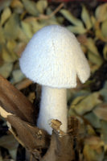

|
||
Premium Patterns Wintry Mix Mitts Love Bytes HawkeyeFree Patterns Kiddie Cadet Summerlin Ruffled Scarf Seamless DS Sock Simply Seamless Pouch Myriads of MushroomsExtras DIY Mitten Blocker Felt Patch Tutorial Yarn Dyeing Tutorial Needle Pouches Knitting Journal |
Myriads of MushroomsDesigned by Grace Schnebly
These little mushrooms knit up quickly and easy to make no matter your skill level. I've created five simple cap patterns and two stem patterns that you can mix and match to make a whole mushroom garden. Use natural colors and needle felted details to create realistic looking mushrooms or bright colors for a more psychedelic look. These would look cute displayed on a shelf and also make great ornaments. MeasurementsMushrooms range in size from 3" to 5.5" tall, detailed measurements for each piece is given below. These patterns can be easily modified to create mushrooms of all shapes and sizes. Materials8 to 20 yards of worsted weight wool that will felt. We used Paton's Classic Wool Merino and Cascade 220. Colors used and detailed yardage required for each piece is given below.* *Do not use Superwash wool. Beware that some white and off white colored wool will not felt. I know from experience that Cascade 220 #8010 and Paton's Classic Wool in Aran and Winter White will felt. GaugeExact gauge is not important. Mushroom Cap PatternsLarge Flat CapSize: 5" in diameter CO 60 sts, join for working in the round. When felting, create a bump in the center of the cap and curl the edges downward. Large Rounded CapSize: 3.25" in diameter by 2" tall CO 39 sts, join for working in the round. While felting, you can mold this cap to create a rounded version or one that is more bell-shaped. Small Rounded CapSize: 2.75" in diameter by 1.5" tall CO 33 sts, join for working in the round. Large Bell-Shaped CapThis also works great as a stem for the Small Rounded and Large Flat caps. Size: 1.75" in diameter by 2.5" tall CO 24 sts, join for working in the round. Small Bell-Shaped CapSize: 1.75" in diameter by 2" tall CO 21 sts, join for working in the round. Mushroom Stem PatternsTall StemSize: 1.5" in diameter at base by 5" tall CO 18 sts, join for working in the round. Medium StemSize: 1" in diameter at base by 3.5" tall CO 15 sts, join for working in the round. Large (left): Large Rounded Cap in Paton's Classic Wool Chestnut and Tall Stem in Paton's Classic Wool Natural Mix. Small (right): Small Rounded Cap in Paton's Classic Wool Chestnut and Medium Stem in Cascade 220 #8010. FeltingPartially fill a bowl with warm water and add a small amount of dish soap or laundry detergent. Place mushroom pieces in water and let soak for 15 to 30 minutes. Felt one piece at a time by rolling it between your hands in a circular motion. Keep agitating until you're not able to make out the individual stitches. The edges will felt slower than the rest of the piece so you will have to work with them slightly longer. I like to felt mine until there is little to no stitch definition left and the fabric is tight and rigid. It also helps to find a picture of a mushroom similar to the one you'd like to make. Many real mushrooms have ridges on their caps, and you can mimic this by felting your cap less and leaving the stitch runs visible. Once you've felted the yarn the pieces to your desired size, rinse out soap in clean water and stretch into the shape you'd like. Make sure that bases of stems are flat and are able to stand up. Let pieces to dry overnight. FinishingOnce piece are dry, attach the caps to the stems. You can use a piece of thread that matches the cap color or a single ply from the cap yarn to make a small stitch securing the pieces together. An easy and quick way to secure them is with a dot of hot glue on the very tip of the stem. If your mushrooms have a hard time standing up, first trace the shape of the flat bottom of the stem on a piece of felt and cut it out. Fill base with weighted beads or dried beans, then sew the piece of felt over the end of the stem using matching colored thread. I used size 38 and 40 felting needles to add spots after felting. You can use wool roving or wool yarn. |
   Recent ReviewsRecent Posts
 Our Favorites
|
| © 2007 KathrynIvy.com | ||
{kind=link}
{kind=link}
{kind=link}
{kind=link}